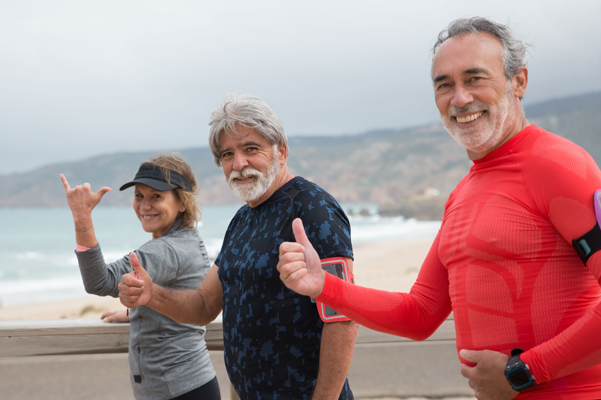

Support
Practical services help seniors live with greater confidence and dignity.
We help older adults remain connected, supported and empowered through compassionate senior services delivered by an all-volunteer team.
Explore our missionMake a donation
Practical services help seniors live with greater confidence and dignity.
Meaningful relationships reduce isolation and strengthen belonging.
Older adults receive the respect, resources and voice they deserve.
We provide senior services grounded in dignity and human connection. Because every employee volunteers and all operating costs are donated, community support stays focused on serving older adults.
See how we serve →
Your gift helps provide meaningful services and connection.
Support our work